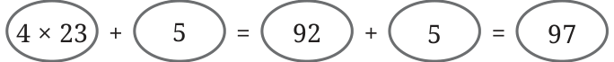
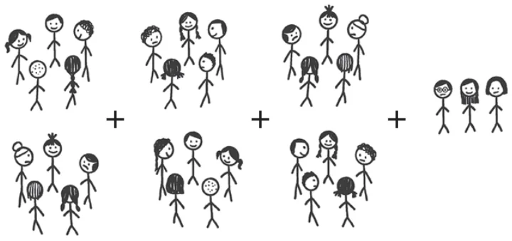
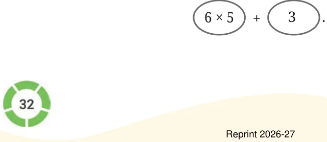
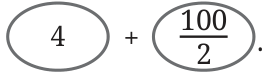
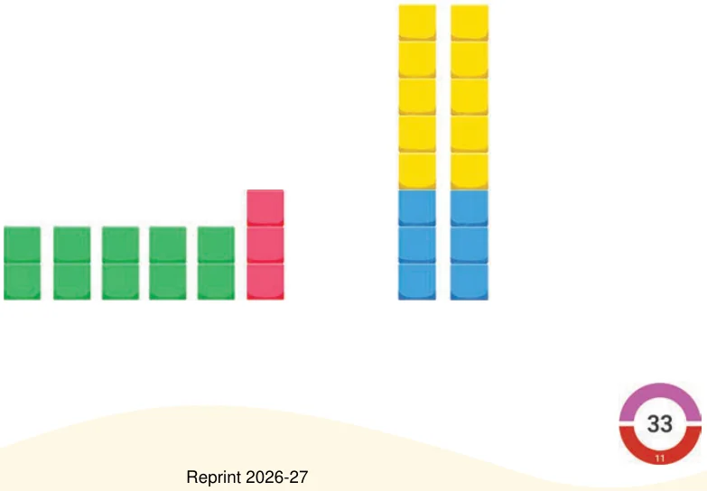
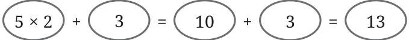

Example 7: Amu, Charan, Madhu, and John went to a hotel and ordered four dosas. Each dosa cost ₹23, and they wish to thank the waiter by tipping ₹5. Write an expression describing the total cost. Cost of 4 dosas \(= 4 \times 23\) Can the total amount with tip be written as \(4 \times 23 + 5\)? Evaluating it, we get

\(4 \times 23 + 5 =\)
Thus, \(4 \times 23 + 5\) is a correct way of writing the expression. If the total number of friends goes up to 7 and the tip remains the same, how much will they have to pay? Write an expression for this situation and identify its terms.
Example 8: Children in a class are playing “Fire in the mountain, run, run, run!”. Whenever the teacher calls out a number, students are supposed to arrange themselves in groups of that number. Whoever is not part of the announced group size, is out. Ruby wanted to rest and sat on one side. The other 33 students were playing the game in the class. The teacher called out ‘5’. Once children settled, Ruby wrote

\(6 \times 5 + 3\)
(understood as 3 more than \(6 \times 5)\)
Think and discuss why she wrote this. The expression written as a sum of terms is -

For each of the cases below, write the expression and identify its terms: If the teacher had called out ‘4’, Ruby would write ____________ If the teacher had called out ‘7’, Ruby would write ____________ Write expressions like the above for your class size. Example 9: Raghu bought 100 kg of rice from the wholesale market and packed them into 2 kg packets. He already had four 2 kg packets. Write an expression for the number of 2 kg packets of rice he has now and identify the terms. He had 4 packets. The number of new 2 kg packets of rice is \(100 \div 2\), which we also write as \(\frac{100}{2}\) . The number of 2 kg packets he has now is \(4 + \frac{100}{2}\) . The terms are -

Example 10: Kannan has to pay ₹432 to a shopkeeper using coins of ₹1 and ₹5, and notes of ₹10, ₹20, ₹50 and ₹100. How can he do it? There is more than one possibility. For example,
\(432 = 4 \times 100 + 1 \times 20 + 1 \times 10 + 2 \times 1\)
Meaning: 4 notes of ₹100, 1 note of ₹20, 1 note of ₹10 and 2 notes of ₹1
\(432 = 8 \times 50 + 1 \times 10 + 4 \times 5 + 2 \times 1\)
Meaning: 8 notes of ₹50, 1 note of ₹10, 4 notes of ₹5 and 2 notes of ₹1 Identify the terms in the two expressions above.
Can you think of some more ways of giving ₹432 to someone? Example 11: Here are two pictures. Which of these two arrangements matches with the expression \(5 \times 2 + 3\)?

Let us write this expression as a sum of terms.

This expression \(5 \times 2 + 3\) can be understood as 3 more than \(5 \times 2\), which describes the arrangement on the left.
What is the expression for the arrangement in the right making use of the number of yellow and blue squares? Do you recall the use of brackets? We need to use brackets for this.
\(2 \times (5 + 3)\)
Notice that this arrangement can also be described using -
\(5 + 3 + 5 + 3\)
\(5 \times 2 + 3 \times 2\)